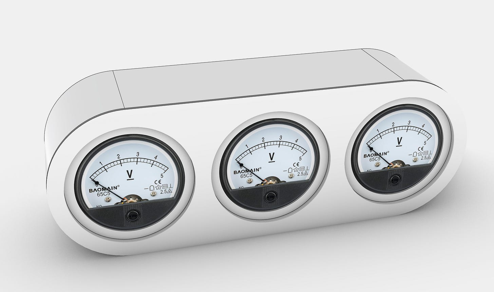
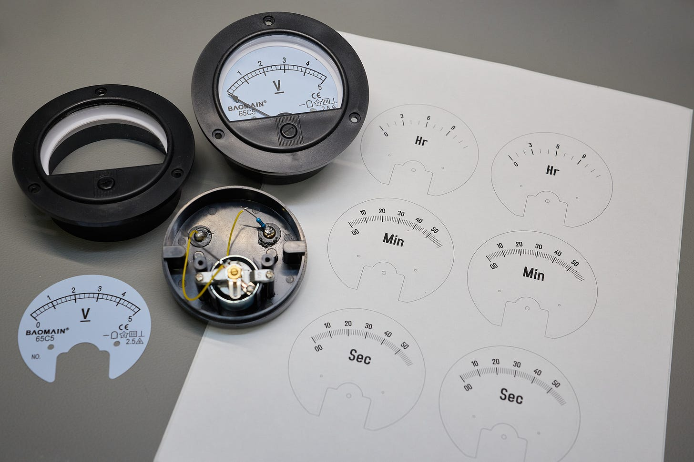
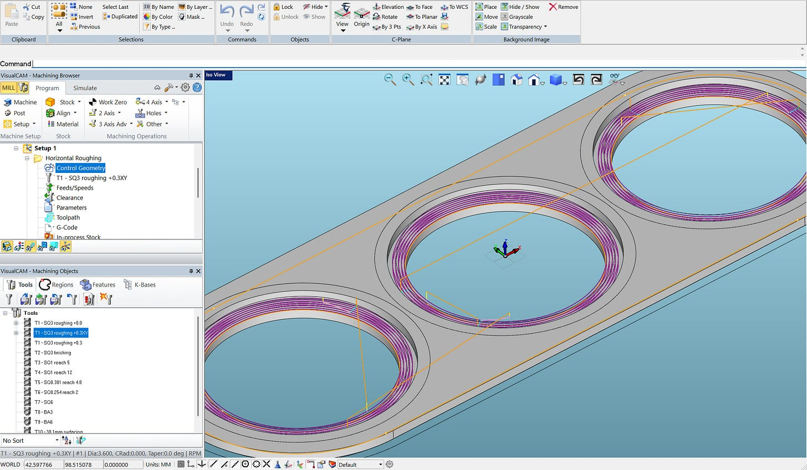
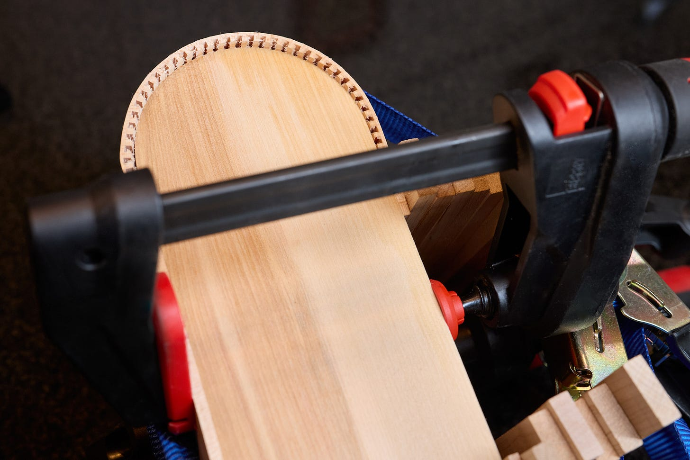
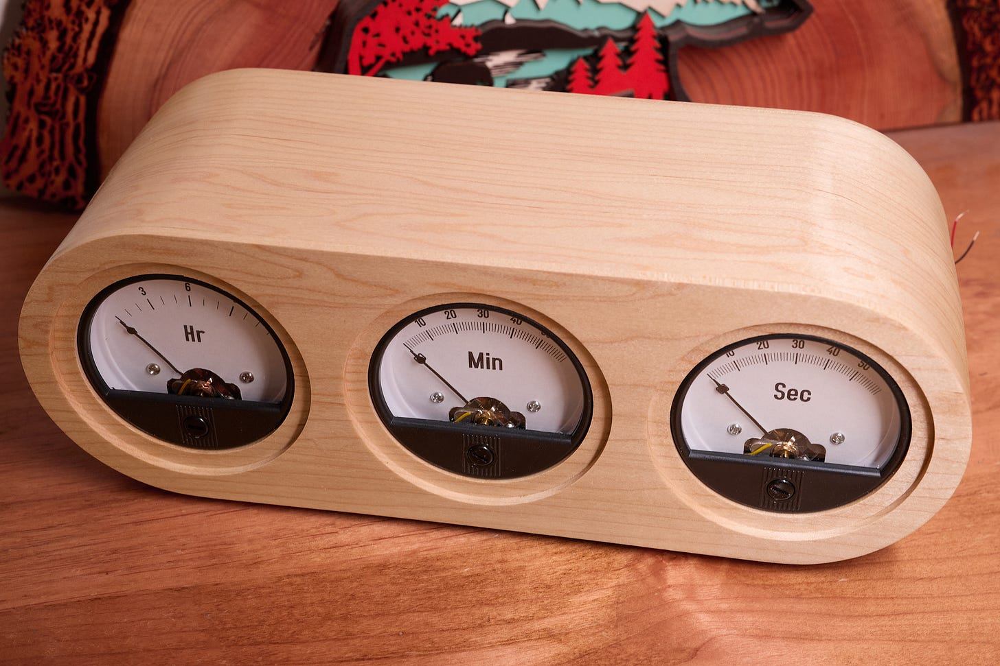
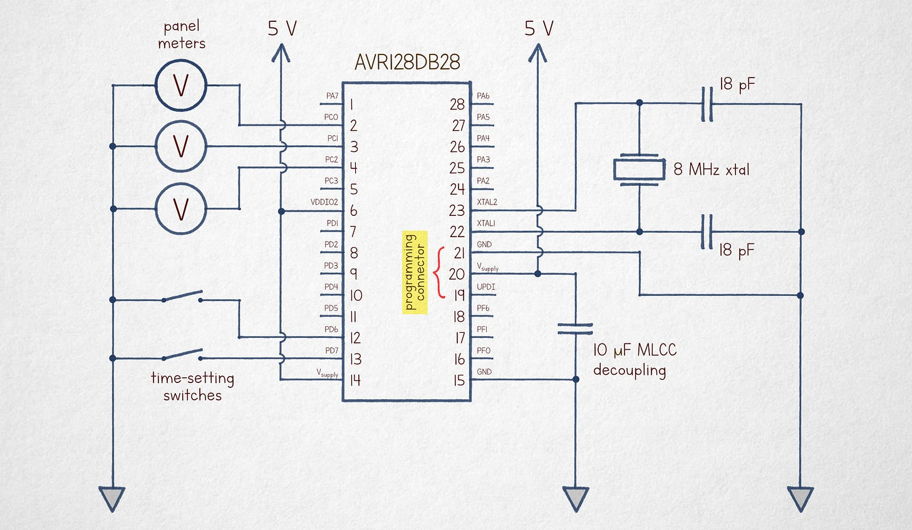

文章背景与核心概要
本文记录了一款模拟伏特表时钟（Voltmeter Clock）的演变与制作过程。作者在改进 2019 年粗糙原型机的基础上，设计出了一款更加精致的版本：采用定制铣削的枫木外壳、精密打印的表盘贴花以及精简的微控制器电路。
该时钟利用连续运动的电表来显示时间，由 AVR128DB28 单片机通过简单的脉冲宽度调制（PWM）技术驱动。文章详细介绍了从 Rhino3D 三维建模、表盘定制、CNC 外壳加工到软硬件实现的完整流程，为硬件爱好者提供了一份极具参考价值的制作指南。
A Nicer Voltmeter Clock
A Nicer Voltmeter Clock
Summary
Summary
This project documents the evolution of an analog voltmeter clock. Moving beyond a "janky" 2019 prototype, the author designed a refined version featuring a custom-milled maple enclosure, precision-printed dial decals, and a streamlined microcontroller circuit. The clock utilizes continuous-motion gauges to display time, driven by a simple pulse-width modulation technique on an AVR128DB28 MCU.
The Design Process
The Design Process
Back in 2019, I built a simple voltmeter clock using analog panel voltmeters. While the concept is popular, many existing designs feel unrefined. I decided to document a more polished approach, starting with a 3D mockup in Rhino3D.

Customizing the Gauges
Customizing the Gauges
I sourced three generic 90° panel voltmeters (approx. $9 each). I disassembled them to create custom, high-quality decals. * Templates: Printable PDF templates are available here. * Continuous Motion: The hour gauge features 13 divisions (0–12), while minutes and seconds feature 61 (00–60). This allows the hands to move continuously toward the next increment rather than jumping abruptly.

Enclosure Fabrication
Enclosure Fabrication
To hide the unsightly plastic flanges of the stock meters, I designed a recessed pattern for the front panel. I used a CNC mill to cut the maple lumber for a precise, professional finish.

For the curved side walls, I employed a "kerf-bending" technique, notching the wood to allow it to conform to a template without requiring a steam-bending rig.
For the curved side walls, I employed a "kerf-bending" technique, notching the wood to allow it to conform to a template without requiring a steam-bending rig.

The final assembly was sanded and finished with a coat of nitrocellulose lacquer.
The final assembly was sanded and finished with a coat of nitrocellulose lacquer.

Electronics and Code
Electronics and Code
The circuit is intentionally simple: * MCU: AVR128DB28. * Drive Method: Instead of complex DACs, I used a high-frequency, 1-bit digital pulse train. The inertia of the meter coils naturally smooths the signal, allowing for precise positioning via duty cycle control. * Timekeeping: Synchronized via an 8 MHz crystal (a 32.768 kHz crystal would also suffice). * Source Code: The well-commented code can be viewed here.

The Result
The Result
Here is the clock in action, captured during the transition at 11:59:59:
PS: A build from a reader, combining the appearance of the v1 clock with the circuitry of v2, can be found here.
PS: A build from a reader, combining the appearance of the v1 clock with the circuitry of v2, can be found here.